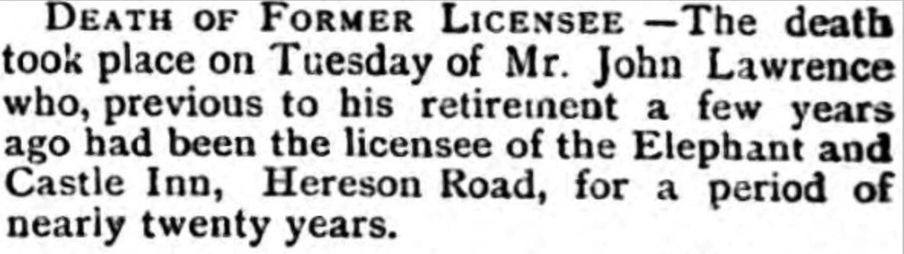
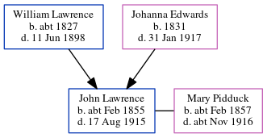

John Lawrence cFeb 1855 - 1915
[ Home ] | [ Calendar ] | [ Surnames Index ] | [ Errors ] | [ Family History ]A licensed victualler, bricklayer's apprentice, ga's serviceman and beer seller and the child of William Lawrence (a harbour labourer) and Johanna Edwards, John Lawrence, the great-great-uncle of Nigel Horne, was born in St Lawrence, Thanet, Kent, England c. Feb 18551,2,3,4,5,6,7 and baptised there on 11 Feb 1855. He married Mary Pidduck there on 14 Feb 18809.
During his life, he was living on Chapel Lane, St Lawrence, Thanet, Kent, England on 7 Apr 186111; at Rear of Southwood Lodge, St Lawrence in Thanet on 2 Apr 187110; at 20 Southwood Terrace, St Lawrence in Thanet on 3 Apr 188113; at his birthplace in 18914 (the same place as his mother had been living on 6 Jun 1841); on The Australian Arms, 45 Ashburnham Road, St Lawrence in Thanet on 5 Apr 189114 - less than a mile from his mother Johanna Edwards who was living at 3 Providence Cottage, St Lawrence in Thanet, his father William Lawrence who was living at 3 Providence Cottage, St Lawrence in Thanet -, his niece Emily Lawrence who was living at 10 Claremont Gardens, Ramsgate, Kent - and his nephew Edward James S, nephew Walter Laurence and brother James Lawrence who were living at 10 Claremont Gardens, Ramsgate, Kent -; at The Elephant and Castle Inn, 5 Hereson Road, Ramsgate, Kent on 31 Mar 190115; and at 43 Ashburnham Road, St Lawrence in Thanet on 2 Apr 191112 - less than a mile from his mother Johanna Edwards who was living at 16 Bloomsbury Road, Ramsgate, Kent, his niece Emily Lawrence who was living at 13 Ashburnham Road, St Lawrence in Thanet -, his great-niece Lilian Florence, great-nephew Frederick Cowell and great-nephew Charles Cowell who were living at 13 Ashburnham Road, St Lawrence in Thanet - and his nephew Edward James S who was living at 2 Clifton Road, St Lawrence in Thanet -.
He died on 17 Aug 1915 in Thanet8.
Parents
- William was born c. 1827
- Johanna Brooker was born in 1831
Citations
- 1861 England Census Online publication - Provo, UT, USA: The Generations Network, Inc., 2005.Original data - Census Returns of England and Wales, 1861. Kew, Surrey, England: The National Archives of the UK (TNA): Public Record Office (PRO), 1861. Data imaged from the National
- 1871 England Census Online publication - Provo, UT, USA: The Generations Network, Inc., 2004.Original data - Census Returns of England and Wales, 1871. Kew, Surrey, England: The National Archives of the UK (TNA): Public Record Office (PRO), 1871. Data imaged from the National
- 1881 England Census Online publication - Provo, UT, USA: The Generations Network, Inc., 2004. 1881 British Isles Census Index provided by The Church of Jesus Christ of Latter-day Saints © Copyright 1999 Intellectual Reserve, Inc. All rights reserved. All use is subject to the
- 1891 England Census Online publication - Provo, UT, USA: The Generations Network, Inc., 2005.Original data - Census Returns of England and Wales, 1891. Kew, Surrey, England: The National Archives of the UK (TNA): Public Record Office (PRO), 1891. Data imaged from The National (Relation to Head of House: Head)
- 1901 England Census Online publication - Provo, UT, USA: The Generations Network, Inc., 2005.Original data - Census Returns of England and Wales, 1901. Kew, Surrey, England: The National Archives of the UK (TNA): Public Record Office (PRO), 1901. Data imaged from the National
- 1911 England Census Online publication - Provo, UT, USA: Ancestry.com Operations, Inc., 2011.Original data - Census Returns of England and Wales, 1911. Kew, Surrey, England: The National Archives of the UK (TNA), 1911. Data imaged from the National Archives, London, England.
- England & Wales births 1837-2006 - Findmypast
- England & Wales deaths 1837-2007 - Findmypast
- England & Wales Marriages 1837-2005 - Findmypast
- 1871 England, Wales & Scotland Census - Findmypast (was age 16 and the son of the head of the household)
- 1861 England, Wales & Scotland Census - Findmypast (was age 6 and the son of the head of the household)
- 1911 Census for England & Wales - Findmypast (was age 56 and the brother in law of the head of the household)
- 1881 England, Wales & Scotland Census - Findmypast (was age 26 and the head of the household)
- 1891 England, Wales & Scotland Census - Findmypast (was age 36 and the head of the household)
- 1901 England, Wales & Scotland Census - Findmypast (was age 46 and the head of the household)
Media
Thanet Advertiser 21 Aug 1915

England & Wales deaths 1837-2007 - BMD/D/1915/3/AZ/000523/106
Canterbury Marriages - GBPRS/CANT/M/97021984/1
England & Wales births 1837-2006 - BMD/B/1855/1/HO/000747/012
England Marriages 1538-1973 - R_848394353
England & Wales marriages 1837-2008 - BMD/M/1880/1/AZ/000144/170
1891 England, Wales & Scotland Census Transcription - GBC-1891-0005908096
1881 England, Wales & Scotland Census Transcription - GBC-1881-0004864830
1901 England, Wales & Scotland Census - GBC/1901/0007450579
England Births & Baptisms 1538-1975 - R_884653775
Family Tree
Map
Generated by ged2site. Last updated on Jul 3, 2024
Known Issues
Listed in the residence for 3 Apr 1881, but spouse Mary Pidduck is not
Listed in the residence for 2 Apr 1911, but spouse Mary Pidduck is not
Emily Cowell (née Lawrence) residence is same location probably should be recorded as the same address (' 13 Ashburnham Road, St Lawrence, Thanet, Kent, England'/' 43 Ashburnham Road, St Lawrence, Thanet, Kent, England') in 1911
Charles Cowell residence is same location probably should be recorded as the same address (' 13 Ashburnham Road, St Lawrence, Thanet, Kent, England'/' 43 Ashburnham Road, St Lawrence, Thanet, Kent, England') in 1911
Frederick Cowell residence is same location probably should be recorded as the same address (' 13 Ashburnham Road, St Lawrence, Thanet, Kent, England'/' 43 Ashburnham Road, St Lawrence, Thanet, Kent, England') in 1911
Lilian Hudson (née Lawrence) residence is same location probably should be recorded as the same address (' 13 Ashburnham Road, St Lawrence, Thanet, Kent, England'/' 43 Ashburnham Road, St Lawrence, Thanet, Kent, England') in 1911